Amunicja:
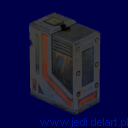
Blaster
Amunicja do:
DL-44 Heavy
Blaster Pistol
E-11 Blaster Rifle
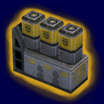
Power cell
Amunicja do:
Tenloss Disruptor Rifle
Wookiee Bowcaster
Destructive Electromagnetic Pulse
2 Gun
Strouker Concussion Rifle
Metallic bolts 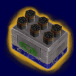
Amunicja do:
Imperial Heavy Repeater
Golan Arms FC-1 Flechette Weapon
Rockets 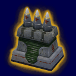
Amunicja do:
Merr-Sonn PLX-2M Portable Missile
System
Inwentarz:
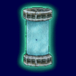
Bio-Tech Bacta cannister
Najnowsza technologia pozwala na b³yskawiczne leczenie ran i obra¿eñ.
Wystêpuje w wersji mormalnej (+25 HP) lub "big Bacta" (+50 HP).
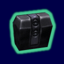
Cloaking device
Ta os³ona czyni niewidzialnym ka¿dego, kto j± u¿ywa. Nale¿y uwa¿aæ
z jej u¿ytkiem, poniewa¿ szybko siê roz³adowuje. Po chwili jednak siê
regeneruje.
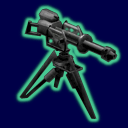
E-WEB
Ten przeno¶ny karabin potrafi zniszczyæ prawie wszystko, jest potê¿n±
broni±, a na dodatek mo¿na nim sterowaæ.
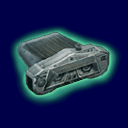
Light ampflication googles
Pozwala na widzenie w bardzo ciemnych pomieszczeniach, co daje du¿±
przewagê nad przeciwnikiem który nie ma tych gogli.
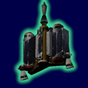
Jetpack
Pozwala lataæ .
A u¿ywa siê go tak: Podskocz, a gdy gracz jest w powietrzu nale¿y
nacisn±æ "u¿ycie" (standardowo Enter lub R). Pamiêtaj,
¿e paliwo jetpacka siê koñczy, ale gdy siê nie lata, paliwo regeneruje siê.
.
A u¿ywa siê go tak: Podskocz, a gdy gracz jest w powietrzu nale¿y
nacisn±æ "u¿ycie" (standardowo Enter lub R). Pamiêtaj,
¿e paliwo jetpacka siê koñczy, ale gdy siê nie lata, paliwo regeneruje siê.
W trybie SP jetpacka u¿ywa siê przez
dwukrotne podskoczenie
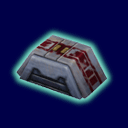
Medpack
Przeno¶na apteczka, u¿ywa siê jej przez przej¶cie przez ni±, nie
mo¿e byæ noszona ze sob± do pó¼niejszego u¿ytku.
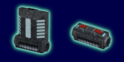
Personal shield generator
Wystêpuje w dwóch wersjach, mniejszej daj±cej 25 os³on i wiêkszej,
daj±cej 50 lub100 os³on. Nie mog± byæ przenoszone do pó¼niejszego
wykorzystania.
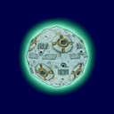
Seeker drone
Treningowy robot do walki mieczem ¶wietlnym, przekszta³cony do walki
z przeciwnikami, strzela do nich. Niszczy siê po pewnym czasie u¿ywania.
Nie mo¿na go wy³±czyæ.
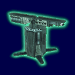
Portable assault sentry
Ten Przeno¶ny karabin ostrzeliwuje wroga bardzo szybkim i gwa³townym
gradem pocisków. Mo¿e zostaæ zniszczony lub sam siê zniszczy po pewnym
czasie. Nie mo¿na nim sterowaæ. Wystarczy po³o¿yæ na ziemi, a on
zrobi brudn± robotê
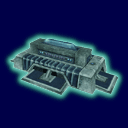
Shield generator
Po u¿yciu tworzy szerok±, p³ask± os³onê, która uniemo¿liwia
przej¶cie przez ni± wroga, odbija niektóre pociski. Mo¿e zostaæ
zniszczona lub sama siê wy³±cza po pewnym czasie.
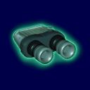
Electrobinoculars
Po prostu troszeczkê powiêkszaj±.
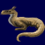
Ylsalimari
To zwierz±tko posiada niezwyk³e w³a¶ciwo¶ci poch³aniania mocy.
Przez 20 sekund osoba, które je trzyma nie mo¿e u¿ywaæ mocy, ale te¿
jest chroniona przed ka¿dym atakiem moc±.